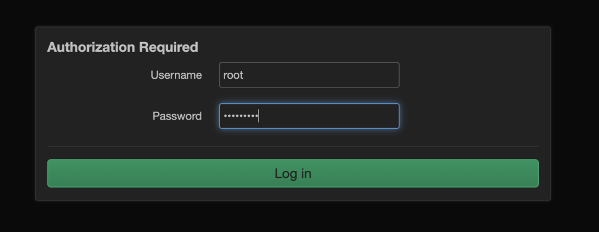
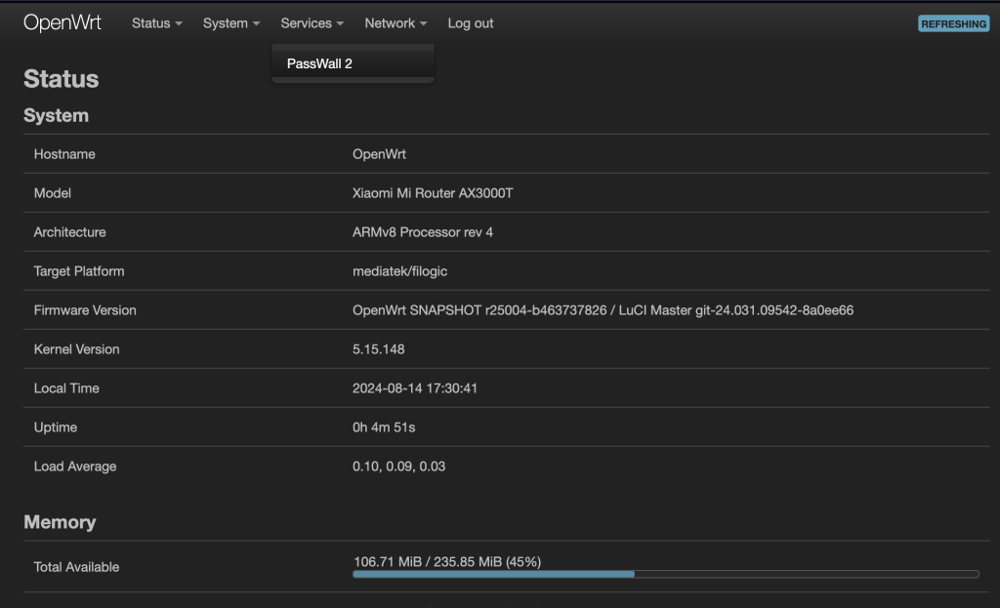
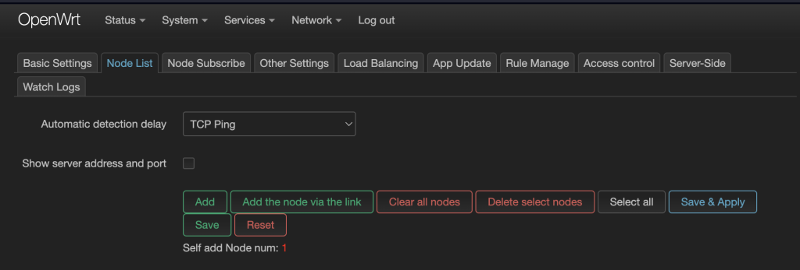
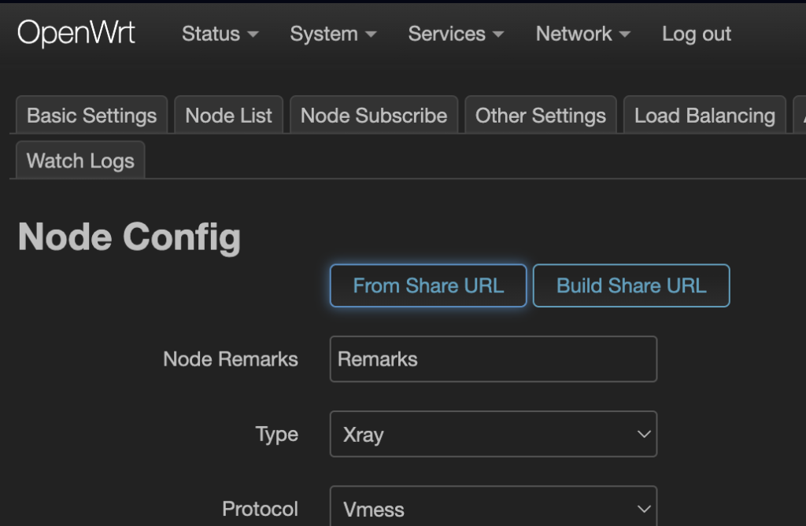
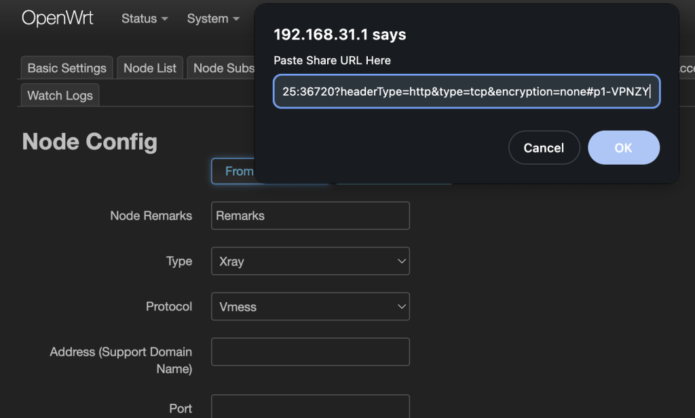
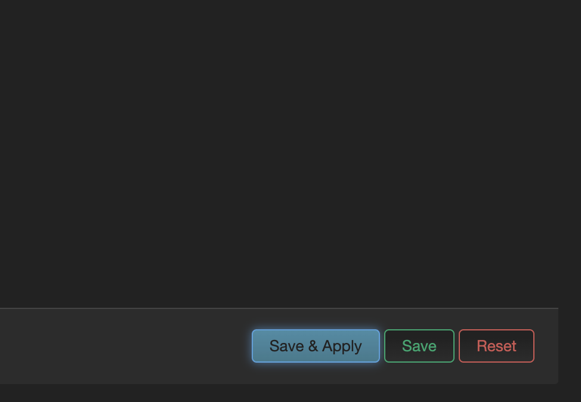
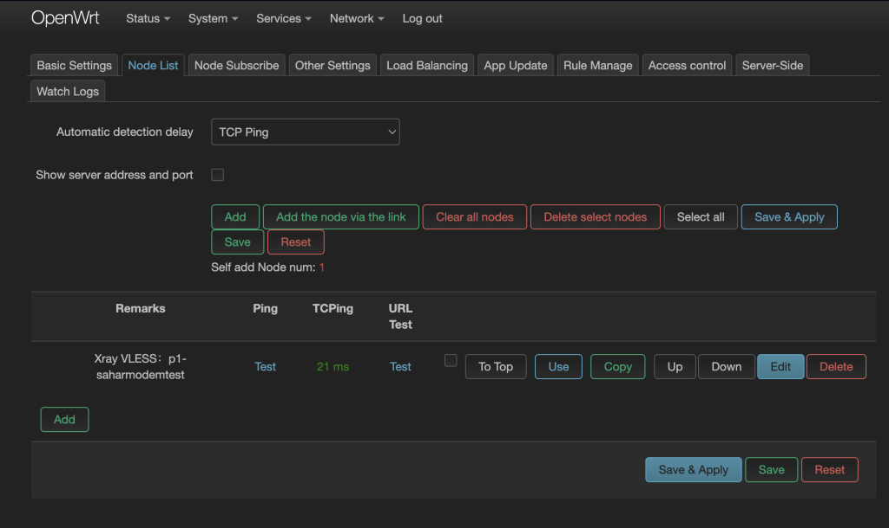

VPN برای مودم دغدغه خیلی از ماست. چون میخوام به راحتی تلویزیونمون یا گوشی کل خانواده رو بهش وصل کنیم. در این مقاله نصب وی پی ان V2ray روی مودم رو بهتون آموزش میدیم.
اکثر مودم ها و روتر ها قابلیت اتصال وی پی ان رو ندارن. اونهایی هم که دارن قابلیت اتصال وی پی ان L2TP و PPTP رو دارن که این پروتکل ها خیلی وقته در کشور ما از کار افتادن.
بهتون پیشنهاد می کنیم برای اتصال ساده و بی دردسر مودم شیائومی AX300T رو خریداری کنید، با کابل لن به مودم یا روتر فعلی وصلش کنید و این آموزش رو اجرا کنید.
روتر های شیائومی که سیستم عامل OPEN WRT دارن همگی از این قابلیت پشتیبانی می کنن.
لینک ترب برای فروشنده های این روتر
لینک دیجی کالا برای جستجو روتر های شیائومی (دقت کنید سیستم عامل OpenWRT باشه)
۱- مودم یا روتر شیائومی رو از طریق کابل لن وصل کنید به مودم یا روتری که تو خونه هست و اینترنت اصلی بهش وصله.
۲- از طریق لپ تاپ وصل شین به مودم شیائومی. میتونید با کابل لن یا از طریق وای فای وصل شین.
۳- وارد پنل کاربری مودم بشین. اکثرا آدرس این پنل 192.168.31.1 هستش.
۴- کلمه root رو وارد کنید و بدون نیاز به پسورد (اگر دفعه اول هست که وارد میشین) روی لاگین کلیک کنید.
۵- منوی Services رو باز کنید و روی گزینه PassWall 2 کلیک کنید 👇
۶- وارد تب Node List بشین و گزینه Add رو بزنید 👇
۷- روی دکمه From Share URL کلیک کنید 👇
۸ -اشتراکی که از ربات @v2MakersBot خریداری کردین (یا اشتراک تست رایگان) رو اینجا Paste کنید و روی OK کلیک کنید.
۹ – روی Save & Apply کلیک کنید.
۱۰- تبریک می گیم. شما به همین راحتی وصل شدین! همونطور که میبینین با سرعت بسیار بالا (پینگ ۲۱ میلی ثانیه) مودم به اکانت ما وصل شده و دیگه کار لازم نیست انجام بدین.
این مودم رو تهیه کنید، اشتراک از ۲ تا سرور مختلف بخرید. این اشتراک ها رو طبق همین آموزش ادد کنید. مودم همیشه وصل میشه به پرسرعت ترین سرور. اگر یه سروری قطع شه شما اصلا حتی متوجه نمیشید. با پیاده سازی این راهکار میتونید اشتراک سالیانه تهیه کنید و برای یکسال با خیال راحت با مشکلات اینترنت خداحافظی کنید.
پروتکل Openvpn روی یه سری از مودم ها کار میکنه. مشکل اینه که وی پی ان های Openvpn سریعا شناسایی و مسدود میشن و این راهکار رو خیلی پیشنهاد نمی کنیم.
شما با این راهکار ۲ تا روتر دارید. یکی با وی پی ان، یدونه بدون وی پی ان! میتونید همیشه به اونی که از قبل وصل میشدین وصل بشین و از اتصال اینترنت اطمینان پیدا کنید